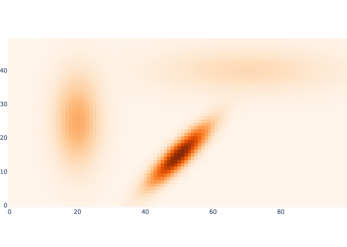
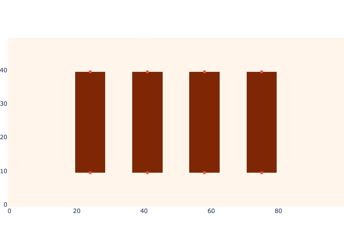
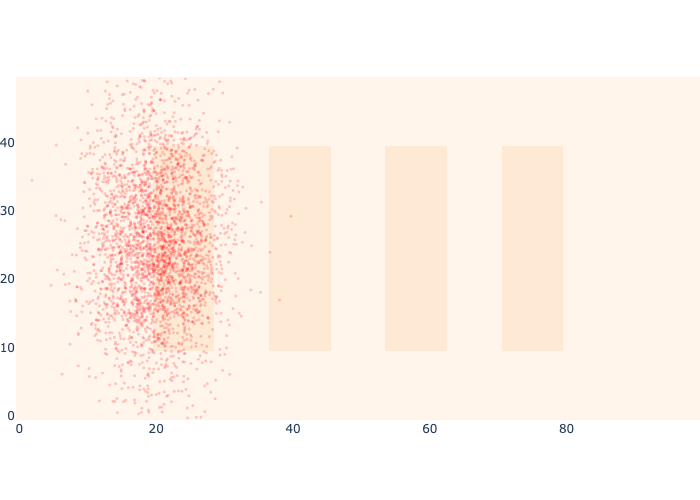
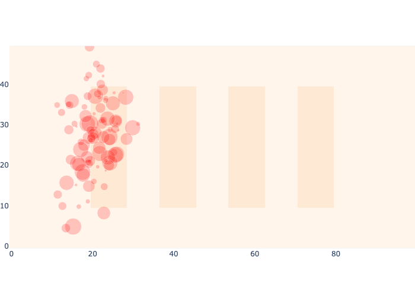
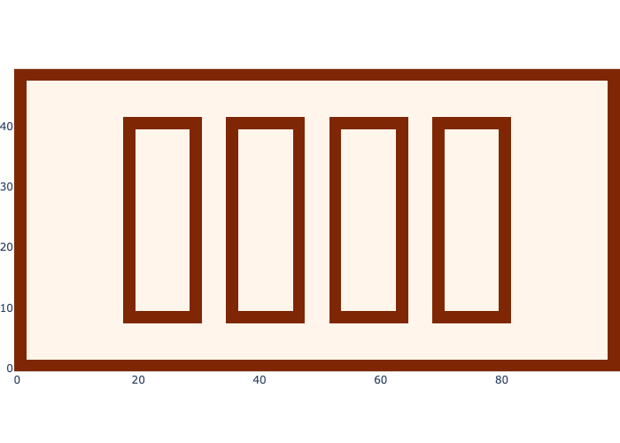
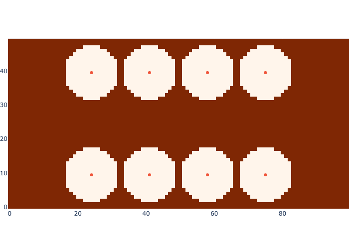

mean = gtsam.Point2(50, 15)
cov = np.array([[40, 35], [35, 40]])
z0 = gaussian(mean, mean, cov)
k = math.sqrt(np.linalg.det(2*math.pi*cov))
test_eq(z0, 1.0/k)
z1 = gaussian(mean + gtsam.Point2(0, 1), mean, cov)
test_eq(z1, 0.007791877665890364)logistics
Logistics/warehouse Chapter
Gaussians
Evaluating a Gaussian for a given mean and variance.
gaussian
gaussian (x:<built-infunctionarray>, mean=array([0., 0.]), cov=array([[1., 0.], [0., 1.]]))
Evaluate multivariate Gaussian at x of shape(m,n), yields (m,) vector.
Show a probability map
Needed to illustrate Markov localization.
map_coords.shape(50, 100, 2)import plotly.io as piopio.renderers.default = "png"show_map
show_map (image=None, markers=None, file:str=None, marker={})
Show image on warehouse map, possibly with markers
means = [np.array([x, y]) for x, y in [(20, 25), (70, 40), (50, 15)]]
covariances = [np.diag([sx**2, sy**2]) for sx, sy in [(5, 10), (20, 5)]]
covariances.append(np.array([[40, 35], [35, 40]]))
image = np.zeros((50, 100))
for mean, cov in zip(means, covariances):
image += gaussian(map_coords, mean, cov)
show_map(image/np.max(image))
Base Map and Beacons
Defining the example warehouse map, and illustrating where sensors are.
show_map(base_map, beacons)
Show Samples
Displaying samples on a map, for Monte Carlo Localization.
from numpy.random import default_rngrng = default_rng()S = 3000
prior = rng.multivariate_normal(means[0], covariances[0], size=S)
show_map(0.1*base_map, markers=prior,
marker=dict(size=3, color="red", opacity=0.2))
T = 100
prior = rng.multivariate_normal(means[0], covariances[0], size=T)
weights = rng.uniform(0, 30, size=T)
show_map(0.1*base_map, markers=prior,
marker=dict(size=weights, color="red", opacity=0.2))
Proximity Sensor
Defining where a proximity sensor fires.
show_map(proximity_map_on)
show_map(proximity_map_off)
Range Sensing:
Defining the “RFID” range sensing:
out_of_rfid_range
out_of_rfid_range (position, max_range=8)
Check if all beacons are out of range.
rfid_measurement
rfid_measurement (position, max_range=8)
Simulate RFID reader that returns nearest RFID range or (None,inf).
rfid_range
rfid_range (position, beacon, max_range=8)
Return range to given beacon.
Out of bounds map:
show_map(out_of_bound_map, beacons)